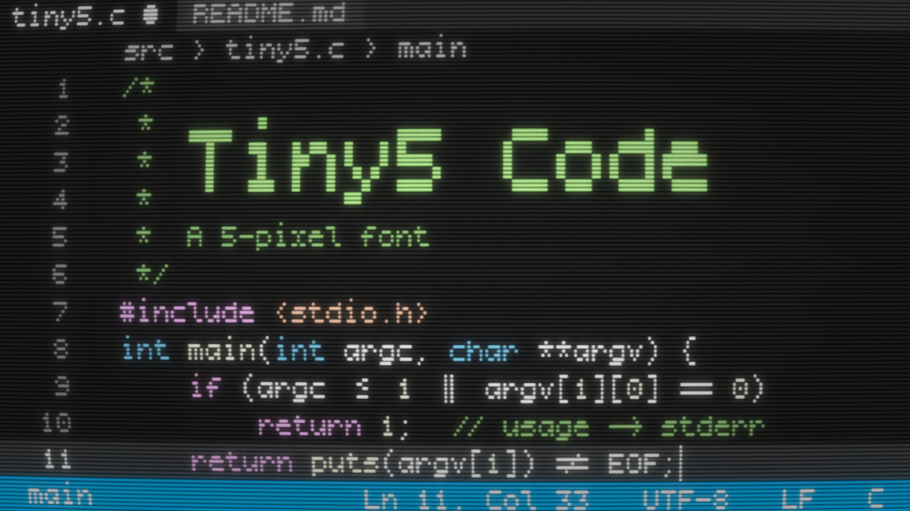
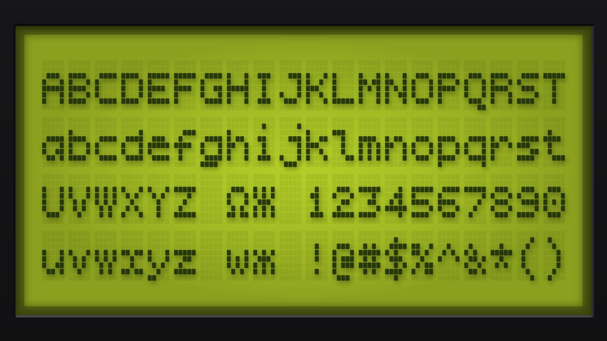
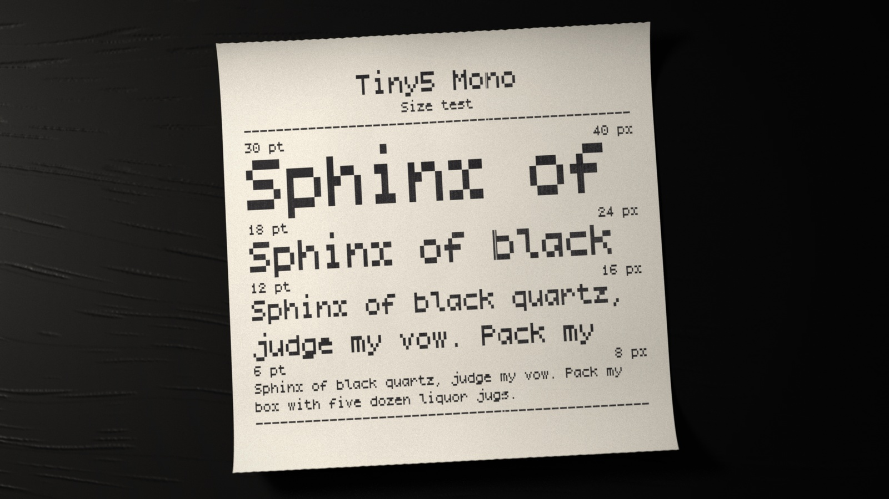
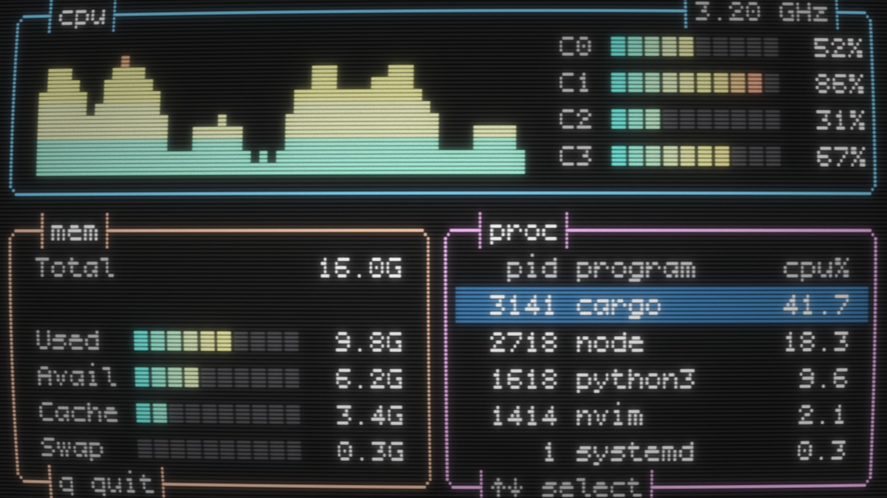
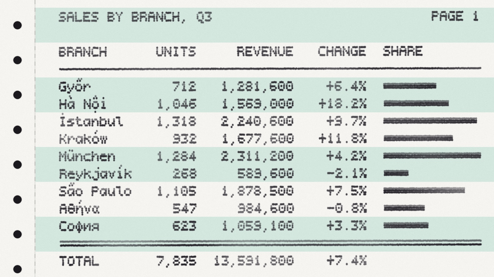

Tiny5 Code is Tiny5 Mono with programming ligatures. It belongs to the Tiny5 family, a compact 5-pixel variable font that captures the essence of 1980s–90s digital minimalism, and it brings the clarity and charm of Tiny5 to code editors and terminals.
Its 77 ligatures join common operators into single shapes: comparisons such as <=, != and ===, which become ≤, ≠ and a long triple bar, and ++, ??, ?., ::, >>, |>, <*>, ~>, </>, #[, /// and <!--. Arrows and lines of any length, such as ->, <-->, ==>, <==>, |->, ->-, =/=, #### and __, join into one stroke, and between digits, the x of 1920x1080 and 0xFF becomes × and the colon of 10:30 is centered. Each shape still fills one cell per character, so columns stay aligned and the cursor moves one character at a time. A ligature only forms where nothing next to it continues it, so ++ joins in i++; but ++++ stays as typed. To use them, turn on font ligatures in your editor or terminal.
Like those of the text modes of 1980s terminals and PCs, its pixels are taller than they are wide. Lines of code stay compact, while the letterforms keep all the legibility of Tiny5.
Like Tiny5, it features six variable axes — Weight, Width, Italic, Roundness, Bleed and Jitter. Weight matches the stroke to your color theme, Width trades columns for breathing room, and Roundness, Bleed and Jitter take its look from crisp geometric shapes and sharp LCD edges to the soft glow of CRT monitors and the subtle ink spread of dot-matrix printers.
Tiny5 Code excels at evoking retro-futurism, constrained-tech nostalgia and clean minimalism. It's especially well-suited for:
It has the full character set of Tiny5 Mono, covering Latin, Greek, Cyrillic and Armenian scripts across 974 languages, with complete sets of box-drawing characters and block elements, plus the sextants and much of Symbols for Legacy Computing, the Powerline symbols and their common extras for shell prompts and status lines, and progress bar and spinner glyphs (U+EE00–U+EE0B, as in Fira Code). It also has small caps for Latin and Cyrillic (smcp and c2sc) and a slashed zero (zero). If you prefer your operators as typed, use Tiny5 Mono, which is identical except for the ligatures.
For crisp rows of pixels, set the font size to increments of 6 pt (8 px). To make the pixels square, set the Width axis to 143.82.
To browse all its glyphs, visit gissio.github.io/font_Tiny5Mono.
To contribute to the project, visit github.com/Gissio/font_Tiny5Mono.




